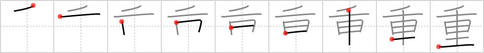

重
← →
heavy

Reading:
On-Yomi: ジュウ、チョウ — Kun-Yomi: え、おも.い、おも.り、おも.なう、かさ.ねる、かさ.なる、おも
Heisig story:
Thousand . . . ri. Note how the long vertical stroke doubles up to serve both elements.
Koohii stories:
1) [erikkusan] 20-3-2006(321): The first computer in the world was as heavy as thousand computers are now.
2) [Immacolata] 21-4-2006(36): To me it looks like a car with two extra wheels, like a truck. As it is a very heavy vehicle I suggest an image of a huge mining truck, like the yellow Liebherr T282B. Remember that the first "wheel" is a bit bent. http://www.primidi.com/2004/06/21.html.
3) [yuriehoshii] 31-5-2011(15): TRỌNG : A CAR 車 WITH DOUBLE WHEELS , TOO HEAVY !!! EASY , YEAH !
4) [TsunamiEddi] 29-3-2011(11): 1000（ 千 ）computers ( 里 ) are so heavy.
5) [mantixen] 9-7-2009(8): A heavy duty truck with four-wheel drive.